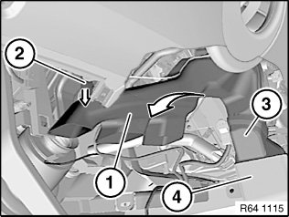
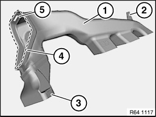
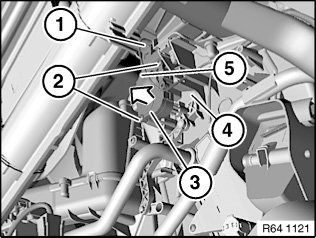

64 11 871 Removing and Installing/Replacing Servodrive For Blending Flap (Left)
64 11 871 Removing And Installing/Replacing Servodrive For Blending Flap (Left)

Necessary preliminary tasks:
- Remove trim for instrument panel at bottom left
- E84/E90/E91/E92/E93:
- Remove panel for pedal assembly

NOTE: Lower instrument panel trim partially shown transparent.
Detach left footwell heating duct (1) in area (2) in direction of arrow.
Detach left footwell heating duct (1) with adapter (3) from heater/air conditioner and remove in direction of arrow from left rear compartment heating duct (4).

Installation:
Make sure retainer (2) is correctly seated on left footwell heating duct (1).
Insert left footwell heating duct (1) with adapter (3) in left rear compartment heating duct (4).
Attach left footwell heating duct (1) in area (4) to heater/air conditioner. Make sure assembly is locked exactly at point (5).

Unfasten plug connection (1) and disconnect.
Unfasten screws (2).
Detach servodrive for blending flap (3) in direction of arrow from heater/air conditioner (4).
Installation:
Place servodrive for blending flap (3) over guide pin (5).

IMPORTANT:
Servomotors must be re-addressed in the event of replacement.
Addressing can only be carried out with the BMW diagnosis system.
Service functions:
- Body
- Heating and A/C function
- Flap motors
- Re-address flap motors